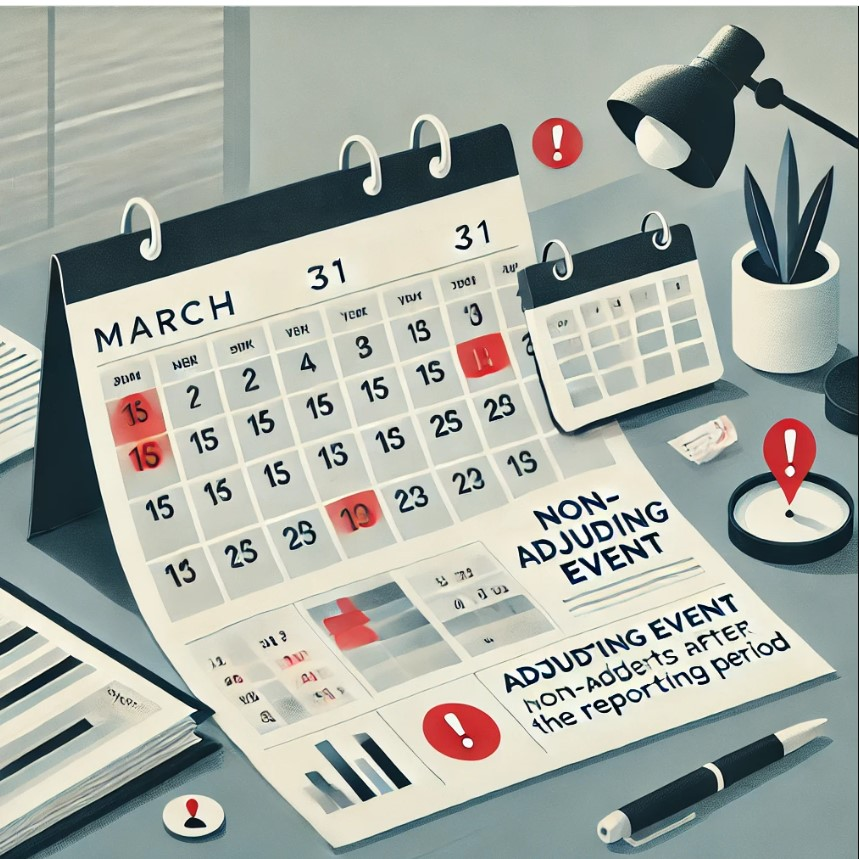

When the Numbers Freeze but the Business Moves On – Inside IAS 10
IAS 10 – Bridging Financial Statements with Real-World Events
Financial reporting isn’t confined to the past. Business realities evolve, even after the books are closed.
That’s the essence of IAS 10 – Events After the Reporting Period, a fundamental accounting standard under IFRS that ensures financial statements remain relevant, accurate, and responsive to significant developments occurring after the reporting date but before the financial statements are authorized for issue.
The truth in financial reporting isn’t just about what was known. It’s about what unfolds next. Because sometimes, hindsight brings the clearest insight.
Scope and Timing
IAS 10 deals with events that take place:
- After the end of the reporting period, and
- Before the date when the financial statements are authorized for issue by the board or other approving body.
This period can often include crucial information — helping to reassess existing balances or draw attention to major post-year-end changes.
Types of Events Defined in IAS 10
1. Adjusting Events After the Reporting Period
These events provide further evidence of conditions that existed at the end of the reporting period.
Examples:
- Court rulings confirming the existence of an obligation at the reporting date.
- Bankruptcy of a customer where financial difficulty was already evident before year-end.
- Discovery of fraud or misstatements related to prior reporting periods.
Accounting Treatment: Adjust the financial statements to reflect the updated information. These events modify the amounts recognized in the statements as they shed light on existing conditions.
2. Non-Adjusting Events After the Reporting Period
These are events that relate to conditions arising after the end of the reporting period.
Examples:
- Fire or natural disasters occurring after year-end.
- Major acquisitions, restructuring announcements, or dividend declarations.
- Decline in market value of investments due to post-year-end developments.
Accounting Treatment: Do not adjust the financial statements. However, material events must be disclosed, indicating the nature of the event and its likely impact.
Going Concern Consideration
If an event after the reporting period indicates that the company may not be able to continue as a going concern, even though it occurred later, management must evaluate whether it remains appropriate to prepare the financials on a going concern basis.
This is a significant element of IAS 10 and can even result in a change in the basis of accounting.
Disclosure Requirements Under IAS 10
For material non-adjusting events, the following must be disclosed in the financial statements:
- The nature of the event, and
- An estimate of its financial effect, or a statement that such an estimate cannot be made reliably.
The objective is to enhance transparency and decision-making for users of financial statements.
Illustrative Example
A company with a 31 December year-end receives confirmation on 10 January that a lawsuit pending since November has been settled. If the settlement confirms a liability that existed at year-end, it qualifies as an adjusting event. The company must revise its provision accordingly.
On the other hand, if a fire damages a factory on 15 January, and no indications existed as of 31 December, it is a non-adjusting event. It does not impact the year-end numbers, but a disclosure is required if the effect is material.
Best Practices for Compliance
To ensure proper compliance with IAS 10, companies should:
- Establish internal processes to track post-reporting-date events.
- Set up cross-functional reporting between finance, legal, and operations teams.
- Evaluate materiality and relevance of all such events.
- Maintain thorough documentation supporting the judgment used.
Auditors also play a key role in validating these assessments and ensuring appropriate treatment in the financial statements.
Conclusion
IAS 10 ensures that financial statements are not outdated the moment they are prepared. It connects the static reporting date with the dynamic real-world events that follow, allowing stakeholders to rely on financials as current, transparent, and decision-useful.
In an ever-evolving global business environment, where market conditions and operational realities shift quickly, the principles of IAS 10 help financial reporting stay both responsible and responsive.
Digital finance brings freedom — but freedom without frameworks is a risk.
Not every token is a financial instrument, but every transaction must be backed by intent, clarity, and an audit trail. In a future built on blockchain, your books will still speak first to your investors.
What if the most important event happened after the books closed?